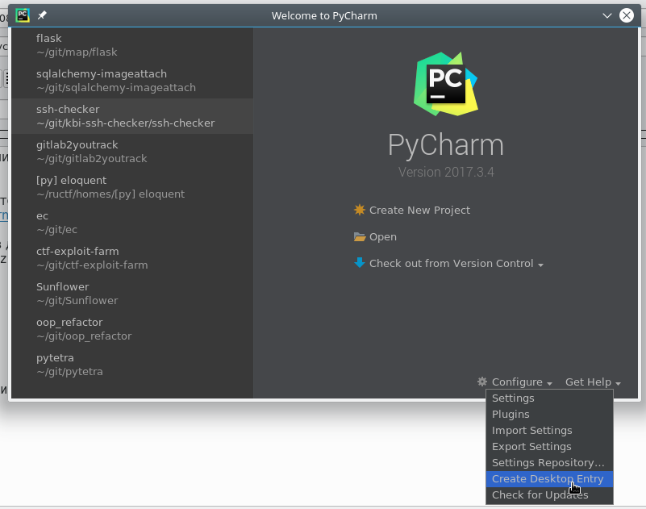

1. Создать папку для приложений:
mkdir ~/.apps
2. Скачать PyCharm Commuity отсюда:
https://www.jetbrains.com/pycharm/download/#section=linux
3. Перенести скачанный файл в директорию ~/.apps и распаковать:
mv ~/Downloads/pycharm-*.tar.gz ~/.apps
cd ~/.apps
tar -xvzf pycharm-*.tar.gz
rm pycharm-*.tar.gz
4. Запустить pycharm.sh:
cd pycharm-*/
./bin/pycharm.sh
5. Добавить значок в меню при помощи специального пункта в меню создания проекта PyCharm:
